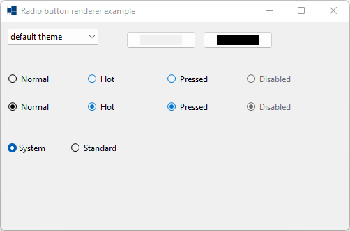
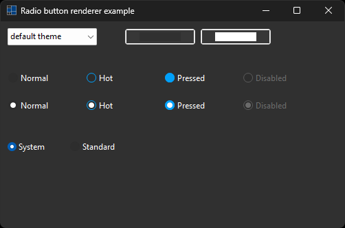
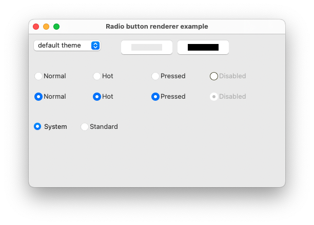
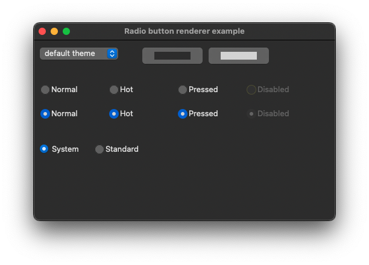
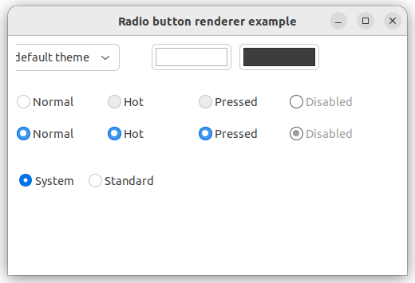
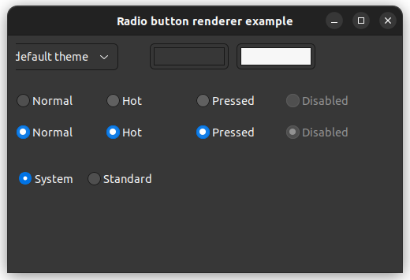

|
xtd
0.2.0
|
radio_button_renderer.cpp
demonstrates the use of xtd::forms::radio_button_renderer control.
- Windows
- 

- macOS
- 

- Gnome
- 

#include <xtd/forms/application>
#include <xtd/forms/choice>
#include <xtd/forms/color_picker>
#include <xtd/forms/form>
#include <xtd/forms/radio_button>
#include <xtd/forms/radio_button_renderer>
#include <xtd/cdebug>
using namespace std;
using namespace xtd;
using namespace xtd::drawing;
using namespace xtd::forms;
namespace radio_button_renderer_example {
public:
form1() {
text("Radio button renderer example");
client_size({500, 300});
set_color(color::blue);
set_color(nullptr);
choice_theme.parent(*this);
choice_theme.location({10, 10});
choice_theme.items().push_back("default theme");
auto names = application::style_sheet_names();
sort(names.begin(), names.end());
choice_theme.items().push_back_range(names);
choice_theme.selected_index(0);
choice_theme.selected_index_changed += [&] {
application::style_sheet(choice_theme.selected_index() == 0 ? application::system_style_sheet() : application::get_style_sheet_from_name(choice_theme.selected_item().value()));
color_picker_background.color(back_color());
color_picker_foreground.color(fore_color());
bcolor.reset();
fcolor.reset();
radio_button_system.back_color(nullptr);
radio_button_system.fore_color(nullptr);
radio_button_standard.back_color(nullptr);
radio_button_standard.fore_color(nullptr);
};
color_picker_background.parent(*this);
color_picker_background.location({180, 10});
color_picker_background.color(back_color());
color_picker_background.color_picker_changed += [&] {
bcolor = color_picker_background.color();
radio_button_system.back_color(bcolor.value());
radio_button_standard.back_color(bcolor.value());
};
color_picker_foreground.parent(*this);
color_picker_foreground.location({290, 10});
color_picker_foreground.color(fore_color());
color_picker_foreground.color_picker_changed += [&] {
fcolor = color_picker_foreground.color();
radio_button_system.fore_color(fcolor.value());
radio_button_standard.fore_color(fcolor.value());
};
radio_button_system.parent(*this);
radio_button_system.checked(true);
radio_button_system.flat_style(xtd::forms::flat_style::system);
radio_button_system.location({10, 170});
radio_button_system.text("System");
radio_button_standard.parent(*this);
radio_button_standard.location({100, 170});
radio_button_standard.text("Standard");
}
protected:
form::on_paint(e);
radio_button_renderer::draw_radio_button(e.graphics(), {10, 70, 104, 25}, "Normal", font(), xtd::forms::text_format_flags::vertical_center | xtd::forms::text_format_flags::left, xtd::drawing::image::empty, {0, 0, 0, 0}, false, xtd::forms::visual_styles::radio_button_state::unchecked_normal, bcolor, fcolor);
radio_button_renderer::draw_radio_button(e.graphics(), {124, 70, 104, 25}, "Hot", font(), xtd::forms::text_format_flags::vertical_center | xtd::forms::text_format_flags::left, xtd::drawing::image::empty, {0, 0, 0, 0}, false, xtd::forms::visual_styles::radio_button_state::unchecked_hot, bcolor, fcolor);
radio_button_renderer::draw_radio_button(e.graphics(), {238, 70, 104, 25}, "Pressed", font(), xtd::forms::text_format_flags::vertical_center | xtd::forms::text_format_flags::left, xtd::drawing::image::empty, {0, 0, 0, 0}, false, xtd::forms::visual_styles::radio_button_state::unchecked_pressed, bcolor, fcolor);
radio_button_renderer::draw_radio_button(e.graphics(), {352, 70, 104, 25}, "Disabled", font(), xtd::forms::text_format_flags::vertical_center | xtd::forms::text_format_flags::left, xtd::drawing::image::empty, {0, 0, 0, 0}, false, xtd::forms::visual_styles::radio_button_state::unchecked_disabled, bcolor, fcolor);
radio_button_renderer::draw_radio_button(e.graphics(), {10, 110, 104, 25}, "Normal", font(), xtd::forms::text_format_flags::vertical_center | xtd::forms::text_format_flags::left, xtd::drawing::image::empty, {0, 0, 0, 0}, false, xtd::forms::visual_styles::radio_button_state::checked_normal, bcolor, fcolor);
radio_button_renderer::draw_radio_button(e.graphics(), {124, 110, 104, 25}, "Hot", font(), xtd::forms::text_format_flags::vertical_center | xtd::forms::text_format_flags::left, xtd::drawing::image::empty, {0, 0, 0, 0}, false, xtd::forms::visual_styles::radio_button_state::checked_hot, bcolor, fcolor);
radio_button_renderer::draw_radio_button(e.graphics(), {238, 110, 104, 25}, "Pressed", font(), xtd::forms::text_format_flags::vertical_center | xtd::forms::text_format_flags::left, xtd::drawing::image::empty, {0, 0, 0, 0}, false, xtd::forms::visual_styles::radio_button_state::checked_pressed, bcolor, fcolor);
radio_button_renderer::draw_radio_button(e.graphics(), {352, 110, 104, 25}, "Disabled", font(), xtd::forms::text_format_flags::vertical_center | xtd::forms::text_format_flags::left, xtd::drawing::image::empty, {0, 0, 0, 0}, false, xtd::forms::visual_styles::radio_button_state::checked_disabled, bcolor, fcolor);
}
private:
void set_color(const color& color) {
cdebug << ustring::format("color = {}", color.to_string()) << endl;
}
void set_color(nullptr_t) {
cdebug << "color = (nullptr)" << endl;
}
optional<color> bcolor;
optional<color> fcolor;
choice choice_theme;
color_picker color_picker_background;
color_picker color_picker_foreground;
radio_button radio_button_system;
radio_button radio_button_standard;
};
}
auto main()->int {
application::run(radio_button_renderer_example::form1 {});
}
static image empty
Represent an empty xtd::drawing::image.
Definition: image.h:63
xtd::forms::style_sheets::control form
The form data allows you to specify the box of a form control.
Definition: form.h:21
@ vertical_center
Centers the text vertically, within the bounding rectangle.
@ left
Aligns the text on the left side of the clipping area. This is the default.
@ unchecked_normal
The radio button is unchecked.
@ checked_normal
The radio button is checked.
@ checked_disabled
The radio button is checked and disabled.
@ unchecked_pressed
The radio button is unchecked and pressed.
@ checked_hot
The radio button is checked and hot.
@ unchecked_hot
The radio button is unchecked and hot.
@ unchecked_disabled
The radio button is unchecked and disabled.
@ checked_pressed
The radio button is checked and pressed.
@ text
The xtd::forms::status_bar_panel displays text in the standard font.
@ system
The appearance of the control is determined by the user's operating system.
The xtd::drawing namespace provides access to GDI+ basic graphics functionality. More advanced functi...
Definition: actions_system_images.h:11
The xtd::forms namespace contains classes for creating Windows-based applications that take full adva...
Definition: about_box.h:13
The xtd namespace contains all fundamental classes to access Hardware, Os, System,...
Definition: system_report.h:17
Generated on Sun Oct 1 2023 07:46:00 for xtd by Gammasoft. All rights reserved.